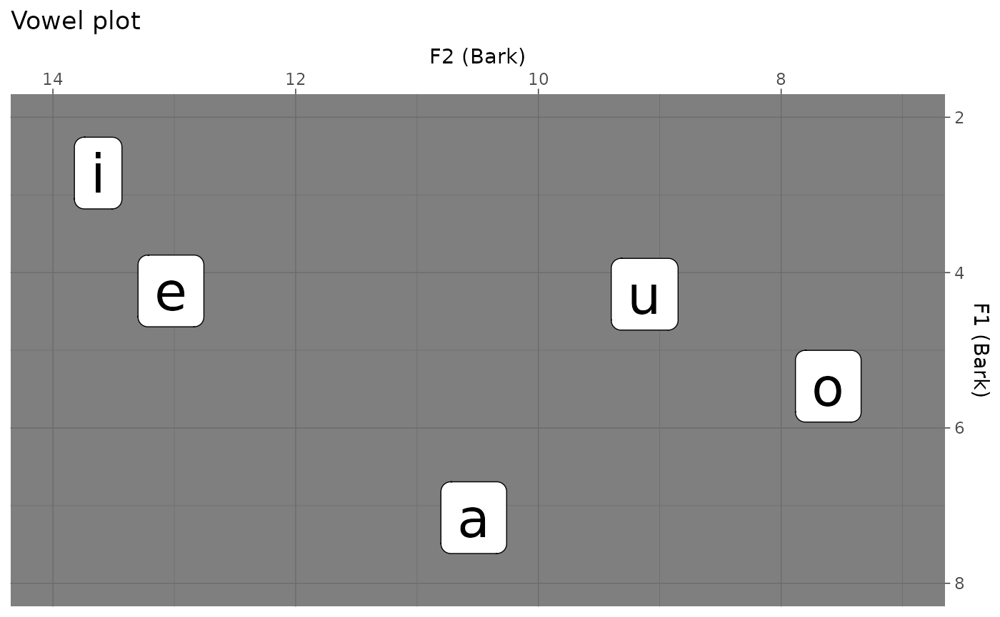

The package speakr allows the user to run a Praat script from within R, optionally passing parameters to the script if a form is used. In combination with rmarkdown::render(), it is possible to generate dynamic reports which include phonetic analyses.
Load the package with:
To run a Praat script, use the function praat_run(). The first argument of the function is the path to the script.
For example:
script <- system.file("extdata", "play-greetings.praat", package = "speakr")
praat_run(script)If the script has side effects, like creating new files or editing existing ones, these effects will take place.
If the script logs text (like a set of acoustic measurements) to a file (with writeFile[Line] and appendFile[Line]), the file is created in the directory specified in the script, and nothing is returned in R. To load the results file in R, just read it in as you would with any other dataset.
The following runs a script that gets formant values and outputs a file with the formant measurements in your home folder.
script <- system.file("extdata", "get-formants.praat", package = "speakr")
praat_run(script)If, on the other hand, the script logs output to the Info window (with writeInfo[Line] and appendInfo[Line]), the output will be sent to the R console.
script <- system.file("extdata", "get-formants-capt.praat", package = "speakr")
# Output to R console
praat_run(script)#> vowel,F1,F2,F3 a,784.4671170665314,1390.927070235929,2433.2403445805335 e,417.00791908249613,2042.453249988405,2423.8583300060627 i,259.0985814360339,2231.740765785137,2819.218714861659 o,562.2955245317842,854.5311682738487,2463.26727657427 u,434.4420321283883,1331.362161871936,2815.9876831692327You can use capture = TRUE in praat_run() to capture the output and pass it to an R variable. The output will be a character string.
#> vowel,F1,F2,F3 a,784.4671170665314,1390.927070235929,2433.2403445805335 e,417.00791908249613,2042.453249988405,2423.8583300060627 i,259.0985814360339,2231.740765785137,2819.218714861659 o,562.2955245317842,854.5311682738487,2463.26727657427 u,434.4420321283883,1331.362161871936,2815.9876831692327Of course, you can redirect the captured output using the pipe %>%, for example to read the output as a tibble.
library(tidyverse)
# Output to R tibble
formants <- praat_run(script, capture = TRUE) %>%
read_csv()
class(formants)
glimpse(formants)#> [1] "spec_tbl_df" "tbl_df" "tbl" "data.frame"
#> Rows: 5
#> Columns: 4
#> $ vowel <chr> "a", "e", "i", "o", "u"
#> $ F1 <dbl> 784.4671, 417.0079, 259.0986, 562.2955, 434.4420
#> $ F2 <dbl> 1390.9271, 2042.4532, 2231.7408, 854.5312, 1331.3622
#> $ F3 <dbl> 2433.240, 2423.858, 2819.219, 2463.267, 2815.988It is possible to pass arguments to the script from R, using Praat forms in the script. The following example runs the script get-formants-args.praat, which requires two arguments: unit (a string, either "Hertz" or "Bark") and window size (a number). Multiple arguments can be specified in praat_run(), in the order in which they appear in the form. These arguments will be passed to the form in the script.
script <- system.file("extdata", "get-formants-args.praat", package = "speakr")
unit = "Bark"
window = 0.02
f_bark <- praat_run(script, unit, window, capture = TRUE) %>%
read_csv()
attr(f_bark, "args") <- list(unit = unit, window = window)#>
#> ── Column specification ────────────────────────────────────────────────────────
#> cols(
#> vowel = col_character(),
#> F1 = col_double(),
#> F2 = col_double(),
#> F3 = col_double()
#> )Let’s have a look at f_bark.
f_bark
#> # A tibble: 5 x 4
#> vowel F1 F2 F3
#> <chr> <dbl> <dbl> <dbl>
#> 1 a 7.16 10.5 14.2
#> 2 e 4.24 13.0 14.2
#> 3 i 2.72 13.6 15.2
#> 4 o 5.46 7.61 14.3
#> 5 u 4.28 9.12 15.1And plot it.
f_bark %>%
ggplot(aes(F2, F1, label = vowel)) +
geom_label(size = 10) +
labs(
title = "Vowel plot",
x = "F2 (Bark)",
y = "F1 (Bark)"
) +
scale_x_reverse(position = "top", limits = c(14, 7)) +
scale_y_reverse(position = "right", limits = c(8, 2))